図解：ナザレ派
ナザレ派の誕生と広がり
- 19世紀初頭
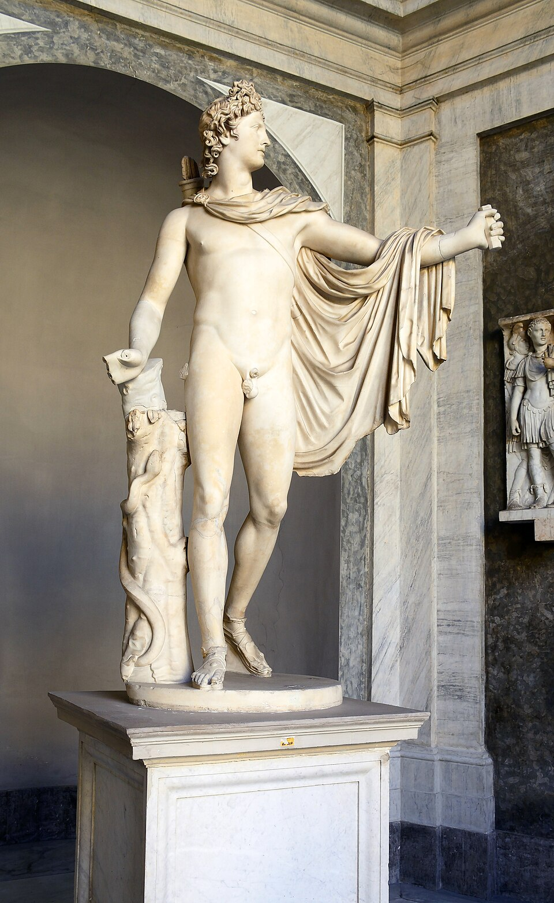
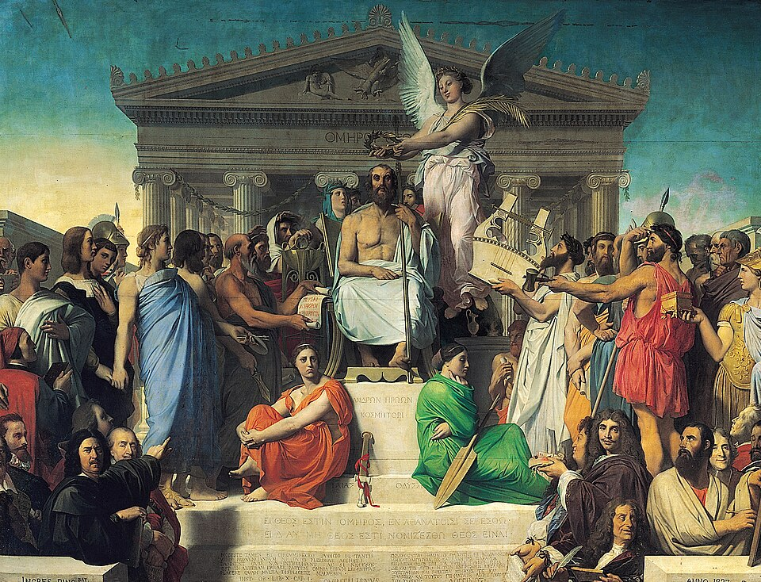
アカデミーの規範新古典主義
型に沿う教育 - 1809
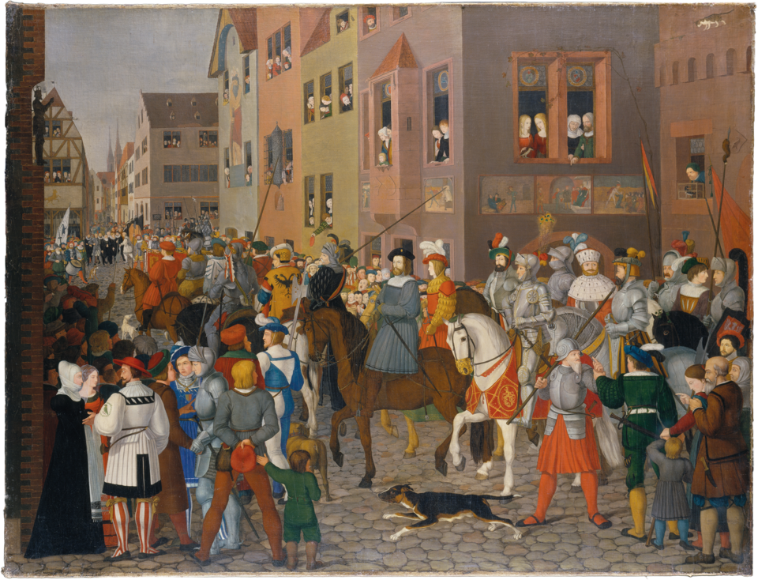
聖ルカ兄弟団ウィーンの学生
信仰に根差す芸術 - 1810
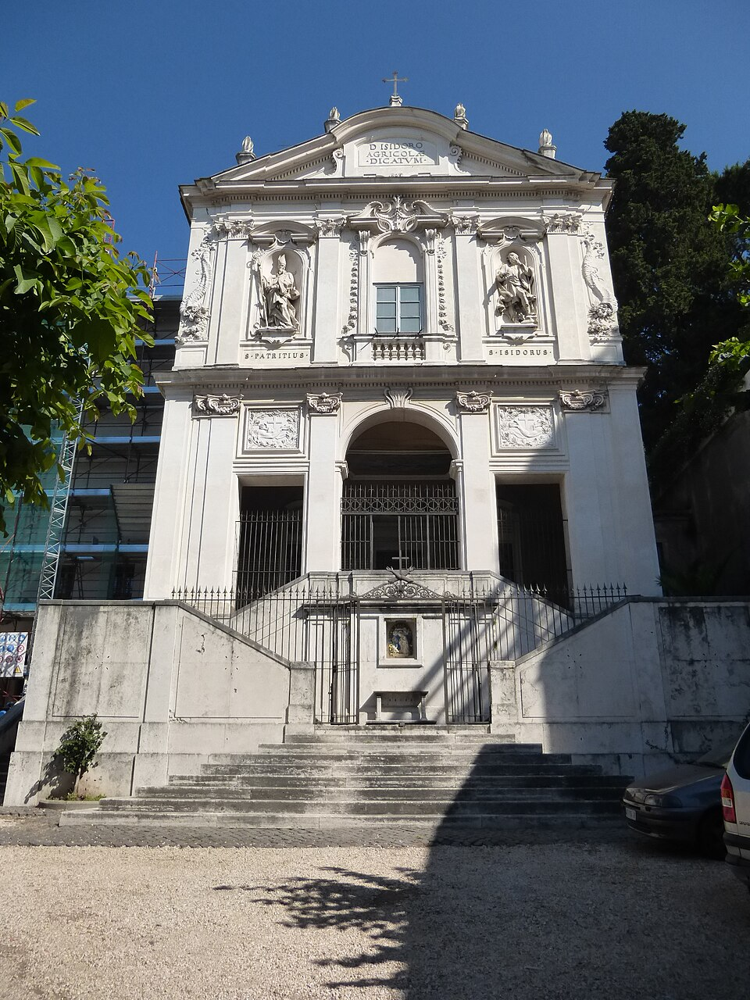
ローマで共同生活廃修道院に住む
ナザレ派と呼ばれる - 1817
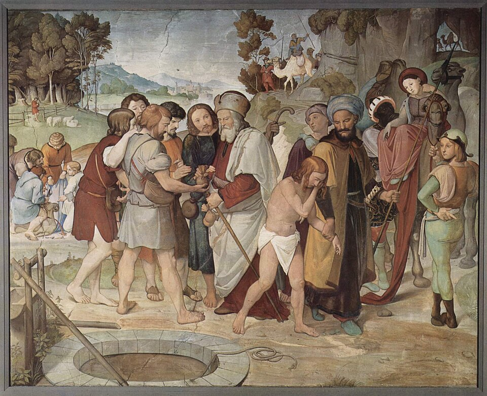
フレスコ画の復興バルトルディ邸
の壁画を制作 - 1830年代
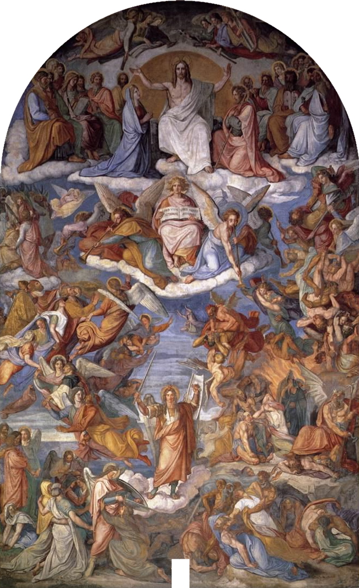
 運動の広がりアカデミー教育へ
運動の広がりアカデミー教育へ
純粋主義に影響
アカデミーと何が違うか
図版の出典
- 《ベルヴェデーレのアポロン》作者不詳（レオカレスに帰属されるギリシア原作に基づくローマ時代の模刻）：出典（CC BY-SA 4.0）
- 《ホメロス礼讃（ホメロスの神格化）》ジャン＝オーギュスト＝ドミニク・アングル：出典（Public domain / PD-Art / PDM）
- 《ハプスブルク王ルドルフ1世のバーゼル入城、1273年》フランツ・プフォル：出典（Public Domain Mark 1.0（館提供、PDM-owner））
- 《サン・イシドロ修道院・教会》作者不詳（各時代の増改築を含む）：出典（CC BY-SA 3.0）
- 《兄弟に売られるヨセフ》ヨハン・フリードリヒ・オーヴァーベック：出典（Public domain（PD-Art／Yorck Project／PDM））
- 《最後の審判》ペーター・フォン・コルネリウス：出典（Public domain / PD-Art / PDM）
- 《イタリアとゲルマニア》ヨハン・フリードリヒ・オーヴァーベック：出典（Public domain / PD-Art / PDM）
重要人物
聖ルカ兄弟団の創設者
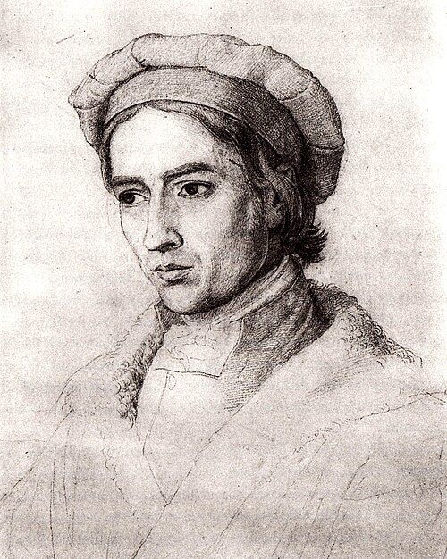
オーヴァーベック画家プフォルと兄弟団を結成。改宗し、ローマにとどまる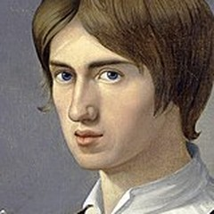
プフォル画家中世の細部を研究した中心人物。1812年に24歳で死去- フォーゲル画家兄弟団の一員。ローマへ移った4人の一人
- ホッティンガー画家兄弟団の一員。ローマへ移った4人の一人
後に加わった画家
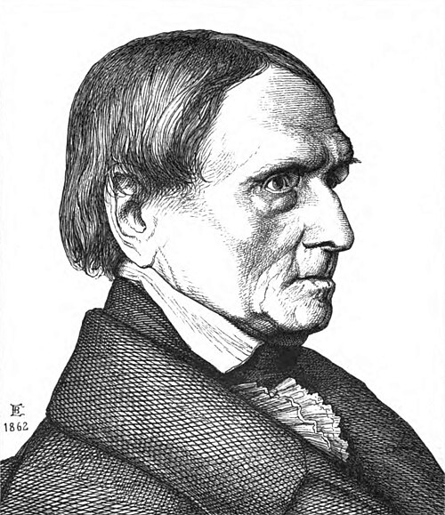
ペーター・フォン・コルネリウス画家デュッセルドルフで院長となり、フレスコ画を広める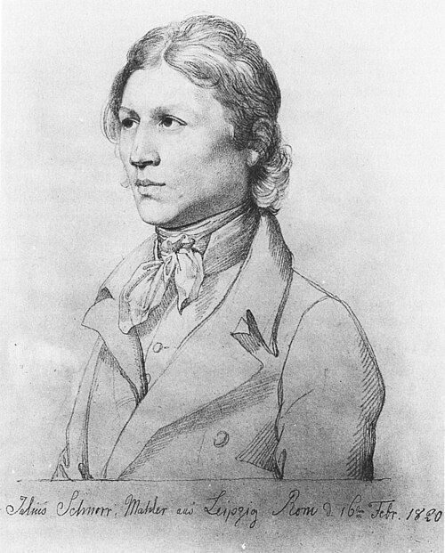
シュノル・フォン・カロルスフェルト画家1817年に参加。ドイツの歴史を主題に多く描く- シャドーアカデミー院長コルネリウスの後任。ナザレ派の理念で教育
支えた人・時代をつくった人
- バルトルディプロイセン総領事ローマの自邸の壁画を依頼する
 ナポレオン皇帝1809年にウィーンを占領。アカデミーは一時閉鎖
ナポレオン皇帝1809年にウィーンを占領。アカデミーは一時閉鎖 ヨハン・ヨアヒム・ヴィンケルマン理論家「高貴なる単純と静かなる偉大」。新古典主義の基盤
ヨハン・ヨアヒム・ヴィンケルマン理論家「高貴なる単純と静かなる偉大」。新古典主義の基盤
同時代と後の画家
 フリードリヒ画家圧倒的な自然への畏怖を通じ、神に近づこうとした
フリードリヒ画家圧倒的な自然への畏怖を通じ、神に近づこうとした- ルンゲ画家北部ドイツで神秘的な世界を描く
- フォード・マドックス・ブラウン画家ナザレ派の作品や理念を紹介し、後の画家へ伝える
- ウィリアム・ダイス画家ブラウンとともにナザレ派を紹介。ラファエル前派へ
肖像・図版の出典
- 《自画像》フリードリヒ・オーヴァーベック、1830年、素描：出典（Public domain）
- 《画家フランツ・プフォルの肖像》フリードリヒ・オーヴァーベック、1810年頃、ベルリン旧国立美術館：出典（Public domain）
- ペーター・フォン・コルネリウスの肖像（版画）、1862年：出典（Public domain）
- 《自画像》ユリウス・シュノル・フォン・カロルスフェルト、素描：出典（Public domain）
- 《テュイルリー宮殿の書斎のナポレオン》ジャック＝ルイ・ダヴィッド、1812年、ワシントン・ナショナル・ギャラリー：出典（Public domain）
- 《ヴィンケルマンの肖像》アンゲリカ・カウフマン、1764年、チューリッヒ美術館：出典（Public domain）
- 《フリードリヒの肖像》ゲルハルト・フォン・キューゲルゲン、1810～1820年頃、ハンブルク美術館：出典（Public domain）
ドイツの政治と宗教文化
宗教画の復興を目指したナザレ派
動画 0:57～ナザレ派は、19世紀初頭にドイツの画家たちから生まれた芸術運動です。当時主流だった新古典主義に反発した、ドイツ・ロマン主義のもう一つの方向と捉えられます。フリードリヒが雄大な自然に崇高を求め、ルンゲが神秘的な世界を描いたのに対し、ナザレ派は宗教画の復興を目指しました。

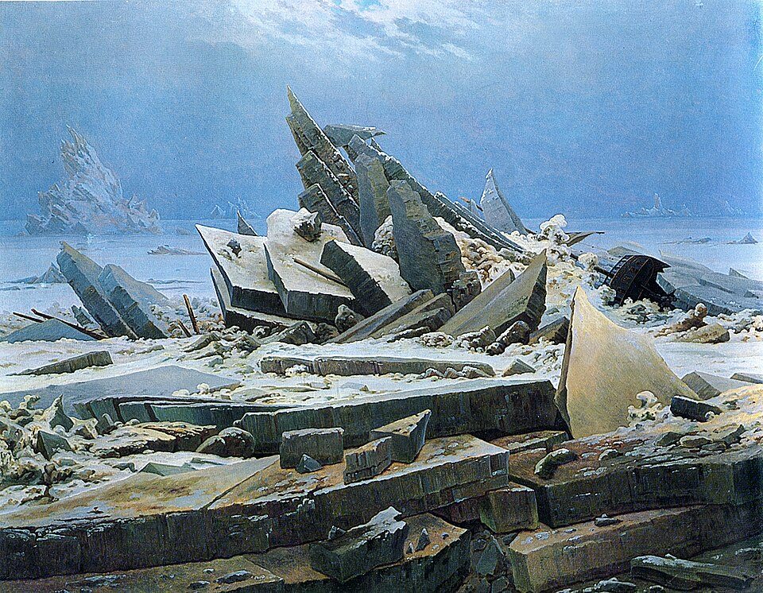
画像を拡大 ＋《氷の海（北極海の難破船）》
- 作者
- カスパー・ダーヴィト・フリードリヒ
- 制作時期
- 1823～1824年
- 所在地・所蔵
- ハンブルク美術館（HK-1051）
- 素材・形式
- 油彩・カンヴァス
- 原題
- Das Eismeer
- 動画の年代
- 1823年
出典・画像について
 画像を拡大 ＋
画像を拡大 ＋
《朝（小さな朝／第1稿）》
- 作者
- フィリップ・オットー・ルンゲ
- 制作時期
- 1808年
- 所在地・所蔵
- ハンブルク美術館（HK-1016）
- 素材・形式
- 油彩・カンヴァス
- 原題
- Der Morgen
出典・画像について
出発点となったのは、ウィーン美術アカデミーの学生たちでした。理性や技術を重視する教育に疑問を抱き、中世や初期ルネサンスの芸術を理想とします。オーヴァーベック、プフォル、コルネリウスらはローマへ渡り、修道院で共同生活を送りながら宗教的な精神を取り戻そうとしました。その背景には、ドイツの宗教文化、アカデミーへの反発、ナポレオン戦争がありました。
神聖ローマ帝国と領邦の自立
動画 2:18～ドイツの歴史は、ゲルマン人のフランク王国へさかのぼります。カール大帝は、現在のフランス、ドイツ、オランダ、ベルギー、北イタリアに及ぶ地域を支配し、教皇から皇帝の冠を授かりました。西ヨーロッパで、古代ローマの継承者という立場を得たのです。ところが843年のヴェルダン条約で王国は三つに分かれ、東フランク王国が後のドイツにつながります。フランスやイタリアとは、ここから別の歩みを始めました。
当初はカロリング家の世襲でしたが、東フランクの王統は911年に途絶えます。人々は西フランクの同じ王家から王を迎えず、自分たちの貴族の中から選びました。その後、オットー1世が貴族をまとめ、現在のハンガリー人につながるマジャール人を破り、962年に教皇から皇帝の冠を受けます。神聖ローマ帝国の始まりは一般にこの年とされますが、800年のカール大帝の戴冠に求める見方もあります。なお、神聖ローマ帝国という名称が定着するのは後のことです。
オットー朝の皇帝たちは古代ローマの後継者を自認し、豪華な装飾写本、荘厳な彫刻や建築を制作させました。オットー朝美術は、ロマネスクにつながる前段階として位置付けられます。しかし王朝が終わると、皇帝の権力は次第に弱まりました。聖職者の任命権をめぐる叙任権闘争では、教皇とも対立します。

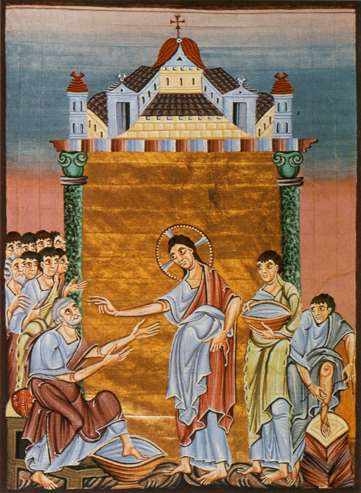
画像を拡大 ＋《使徒たちの足を洗うキリスト（オットー3世の福音書）》
- 作者
- 作者不詳（ライヘナウ、リウタール工房）
- 制作時期
- 10世紀末～11世紀初頭（1000年頃）
- 所在地・所蔵
- バイエルン州立図書館、ミュンヘン（Clm 4453）
- 素材・形式
- 写本挿絵・装飾
出典・画像について

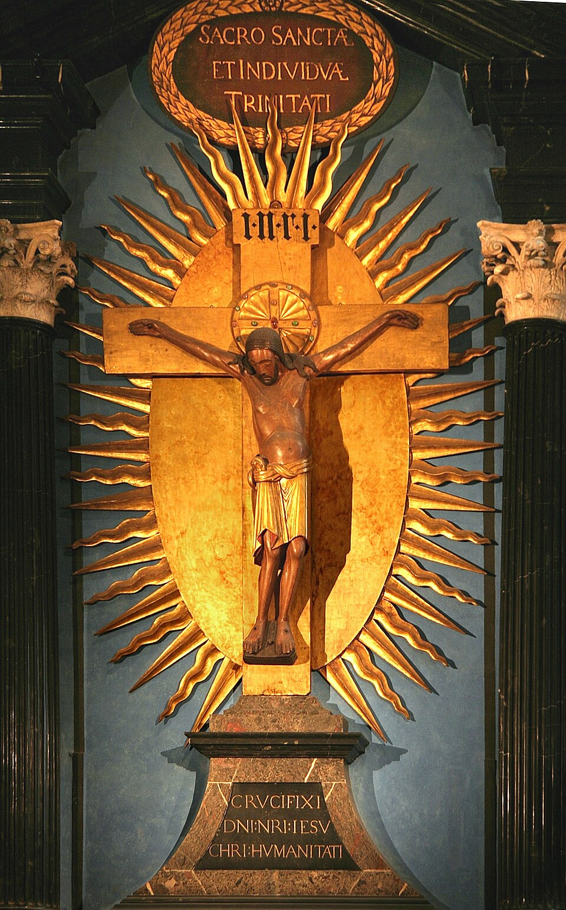
画像を拡大 ＋《ゲロの十字架》
- 作者
- 作者不詳
- 制作時期
- 970年頃
- 所在地・所蔵
- ケルン大聖堂、ドイツ
- 素材・形式
- 木彫・彩色
- 原題
- Gerokreuz
出典・画像について
皇帝は選帝侯の選挙で選ばれるため、支持を得るには有力諸侯への配慮が必要でした。中央に力を集めにくく、バイエルンなど多くの領邦が独立性を強めていきます。同じフランク王国から出発しても、王が力を集めたフランスと、諸侯が力を保ったドイツとでは、政治と美術のあり方が異なりました。フランスでは、王を破門しようとした教皇が王側の勢力に襲撃されるほど、王権が強まっていました。
苦しむキリスト像と神秘主義
動画 5:01～フランスのゴシック美術では、柔らかく微笑む聖母像が多く作られました。宮廷で聖母崇敬が重んじられ、王家の紋章フルール・ド・リスは、百合の花を様式化したものです。白百合は聖母の純潔を象徴し、聖母に守られた王という考えが王権の正当性を支えました。各都市には、ノートルダム、すなわち「われらの貴婦人」の名を持つ大聖堂が建てられます。王権を軸に、ある程度共通した文化が広まったのです。対してドイツでは、民衆の信仰を背景に、痛々しく苦しむキリスト像が好まれました。
305秒の白石像、彩色像2体、銀色小像の個体名・所在地が未確定。似た像を代用しない。
《フランスの聖母子像（4点、個体未確定）》
- 作者
- 作者未確定
- 制作時期
- 不明
- 所在地・所蔵
- 未確定
- 素材・形式
出典・画像について
ラインラントで活動したマイスター・エックハルトやヨハネス・タウラーは、外面的な祈りの形式だけに頼らず、自分の内面に神を見いだす神秘主義を説きました。瞑想や内省を通じ、神との直接の接触を求める考えです。
領邦に分かれた不安定な社会に、ペストのような災厄が重なりました。祈っても救われないとき、外からの救済を待つだけでは、手の打ちようがなくなります。しかし内面に神を求めるなら、自ら進める信仰の道があります。キリストの苦しみを生々しく表した像は、見る人がその痛みに共感し、内面的につながるための手掛かりになったと考えられます。

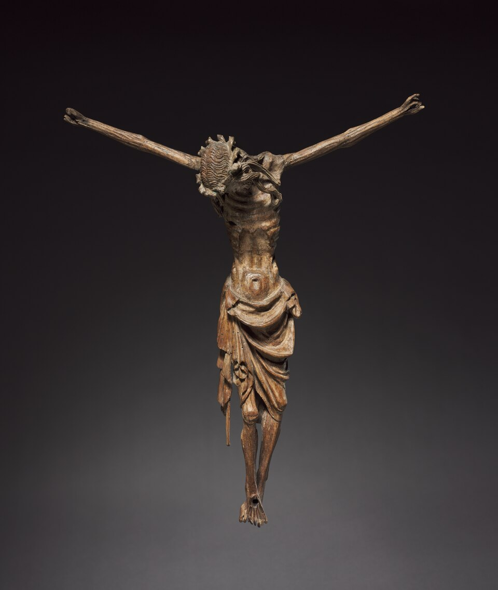
画像を拡大 ＋《磔刑のキリスト》
- 作者
- 作者不詳（ケルン）
- 制作時期
- 1340～1350年頃
- 所在地・所蔵
- クリーブランド美術館（1981.52）
- 素材・形式
- 木彫（クルミ材、旧彩色）
- 原題
- Crucified Christ
出典・画像について
作品情報：作品・画像・利用条件 · 所蔵館の作品ページ
345秒右は墓の前でキリストを聖母らが囲む板絵。ロエトゲンの彫刻ピエタではない。限定探索で個体不明のため保留。
《キリストの受難を表す板絵（個体未確定）》
- 作者
- 作者未確定
- 制作時期
- 不明
- 所在地・所蔵
- 未確定
- 素材・形式
出典・画像について
宗教改革と三十年戦争
動画 7:22～自らを鞭打ち、キリストの苦痛を分かち合おうとする運動もありました。中央イタリアで始まり、ペスト流行とともにヨーロッパへ広がります。フランスでは教皇クレメンス6世が非難し、国王フィリップ6世と連携して抑えたため、あまり広まりませんでした。当時はアヴィニョン捕囚の時代で、教皇庁はローマからフランスのアヴィニョンへ移っていました。一方、ドイツには全体を統制する強い中央権力がなく、内面で神とつながろうとする信仰が根強く残りました。
北方ルネサンスのグリューネヴァルトの絵にも、この宗教観が反映されているように見えます。ドイツでは、デューラーがイタリアの遠近法や人体比例を取り入れる以前、感情を強く訴える表現が重視されました。その後、1517年にルターがヴィッテンベルクで示した「95か条の論題」を契機に、宗教改革が進み、プロテスタントが成立します。ネーデルラントでも宗教による分岐が起こり、プロテスタントのオランダはスペインから独立し、カトリックの地域は後のベルギーにつながりました。

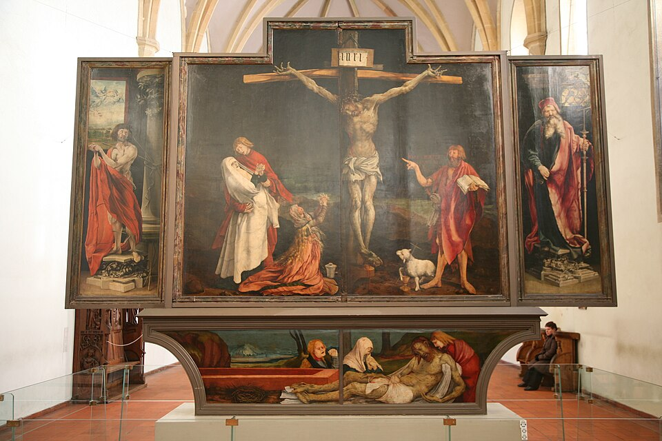
画像を拡大 ＋《イーゼンハイム祭壇画（閉扉時の磔刑面）》
- 作者
- マティアス・グリューネヴァルト
- 制作時期
- 1512～1516年頃
- 所在地・所蔵
- ウンターリンデン美術館、コルマール
- 素材・形式
- 油彩・板
- 原題
- Isenheimer Altar
出典・画像について
画像出典：Vincent Desjardins
CC BY 2.0
作品情報：作品・画像・利用条件
1546年には、カトリックの皇帝カール5世とプロテスタント諸侯の間でシュマルカルデン戦争が起こります。皇帝側が勝利した後、アウクスブルクの宗教和議では、領主が領内の宗教を選ぶことになりました。それでも対立は収まりません。
1618年、ボヘミアでハプスブルク家の支配者がカトリックを強制しようとしたことから反乱が起こります。周辺諸国の介入も加わり、争いは1648年まで続く三十年戦争へ発展しました。ウェストファリア条約で諸領邦の主権が認められ、戦争で荒廃した神聖ローマ帝国は、名目的なまとまりを残すようになります。宗教上は、おおむね北部にプロテスタント、南部にカトリックが多いという違いが生まれ、美術にも影響しました。
美術様式とアカデミー
南部の教会装飾と北部の宮廷
動画 9:58～南部のカトリック教会は、人々を視覚的に引き付ける、豪華なバロック装飾を取り入れました。一方、プロテスタントの教会は装飾を抑えた簡素な空間を重んじます。戦争の影響でドイツへのバロックの導入は遅れ、成熟した様式が入ってきたため、南部ではバロックとロココが連続するような姿を見せました。フランスの宮廷文化を背景とするロココに対し、ドイツ南部ではカトリックの信仰を広める役割を担ったのです。

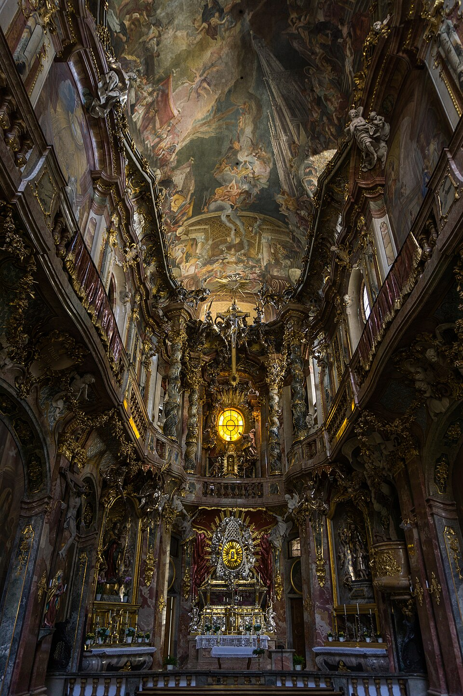
画像を拡大 ＋《アザム教会（聖ヨハン・ネポムク教会）内観》
- 作者
- アザム兄弟
- 制作時期
- 1733～1746年
- 所在地・所蔵
- ミュンヘン、ゼンドリンガー通り32
- 素材・形式
- 教会建築・室内装飾
- 原題
- Asamkirche / St. Johann Nepomuk
出典・画像について
作品情報：作品・画像・利用条件
北部でも、教会とは別に、宮廷にはロココが取り入れられました。プロテスタントのプロイセンにあるポツダムのサンスーシ宮殿は、その例です。こうしてドイツでは、地域と宗教、注文主によって美術の性格が異なり、外国から取り入れた様式も独自に使われました。西洋美術史の様式の中心として扱われにくい事情の一つといえます。

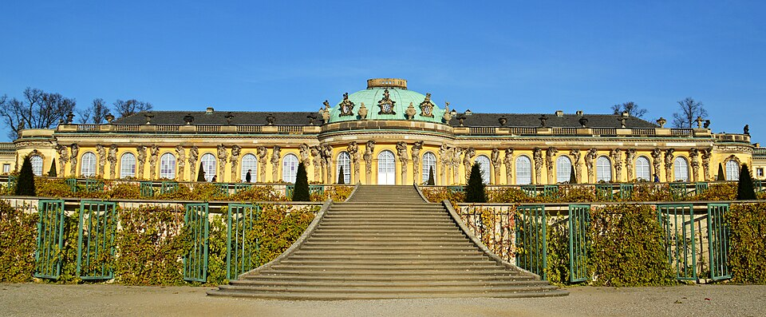
画像を拡大 ＋《サンスーシ宮殿》
- 作者
- ゲオルク・ヴェンツェスラウス・フォン・クノーベルスドルフ
- 制作時期
- 1745～1747年
- 所在地・所蔵
- ポツダム、サンスーシ公園
- 素材・形式
- 宮殿建築
- 原題
- Schloss Sanssouci
出典・画像について
画像出典：Tobias Nordhausen
CC BY 2.0
作品情報：作品・画像・利用条件
新古典主義とアカデミーの規則
動画 11:08～北部ブランデンブルク出身のヨハン・ヨアヒム・ヴィンケルマンは、古代ギリシアの彫刻に「高貴なる単純と静かなる偉大」を見いだしました。古代ギリシアで理想美はすでに実現されており、それを模倣すべきだと考えたのです。『ギリシア芸術模倣論』などが、新古典主義の理論的な基盤となりました。なお、彼がギリシアの作品として見ていた彫刻には、実際にはローマ時代のものも含まれていました。

《ベルヴェデーレのアポロン》
- 作者
- 作者不詳（レオカレスに帰属されるギリシア原作に基づくローマ時代の模刻）
- 制作時期
- 130～140年頃
- 所在地・所蔵
- ヴァチカン美術館、ピオ・クレメンティーノ美術館（1015）
- 素材・形式
- 大理石
- 原題
- Apollo Belvedere
出典・画像について
紀元前4世紀のギリシア原作に基づく古代ローマ時代の模刻。近代の複製ではありません。
画像出典：Livioandronico2013
CC BY-SA 4.0
作品情報：作品・画像・利用条件 · 所蔵館の作品ページ
新古典主義は、調和、均衡、明瞭さを重んじ、装飾や感情の過剰さを抑えます。理性や秩序に基づく簡潔な表現は、カトリック圏では華麗な装飾への反動として、プロテスタント圏では簡素さを尊ぶ考えと合うものとして受け入れられました。バロックやロココという呼称にも、後世からの否定的な評価が込められていました。古代ギリシアをヨーロッパ文化の起源とする意識もあり、新古典主義は国を越えて広まったのです。
明快な美の基準は教育に向いています。左右の対称性や正確な人体比例、構図の秩序を示せば、なぜ美しいのかを説明しやすくなります。中央から伸びる線をたどることも、構図を視覚的に理解する助けになります。裏を返すと、そうした秩序や構造を備えない作品には、批判を加えやすくもなるのです。新古典主義は、余計なものを取り除き、理論的に美を組み立てる「引き算の美術」でした。しかし、個性を出すために加えた要素まで、不要と見なされかねません。多くの国のアカデミーが新古典主義を基礎とする指導を採用し、規範や方法に従うことが正しいとされるうち、教育は画一的になりました。個性や革新が抑えられ、19世紀には、この教育への反発がさまざまな運動につながります。

《ホメロス礼讃（ホメロスの神格化）》
- 作者
- ジャン＝オーギュスト＝ドミニク・アングル
- 制作時期
- 1827年
- 所在地・所蔵
- ルーヴル美術館（INV5417）
- 素材・形式
- 油彩・カンヴァス
- 原題
- L’Apothéose d’Homère
出典・画像について
戦争とロマン主義
ナポレオン戦争とドイツ・ロマン主義
動画 13:34～ナポレオン戦争でフランスがヨーロッパの大半を支配すると、各国の外交、交通、交流は大きく妨げられました。それを契機に、各国は自国の国家意識を見つめ直します。ドイツでも、1806年に皇帝フランツ2世が退位し、約千年続いた神聖ローマ帝国が終わりました。フランス支配への抵抗は、それまで希薄だったドイツ人としての意識を強め、新古典主義を見直す契機にもなります。ヨーロッパ文化の起源は古代ギリシアにあるとしても、それだけで自分たちの文化を説明できるのかが問われたのです。人々は、ドイツを形づくった歴史や文化へ目を向けるようになりました。
北部ドイツのフリードリヒやルンゲは、雄大な自然や神秘的な世界を描きました。内面の精神性を重んじる神秘主義とのつながりを考えると、ドイツでこの表現が生まれたことを理解しやすくなります。フリードリヒは、自然そのものを神として描くというより、圧倒的な自然に触れた人間が感じる畏怖や神秘を通じ、神に近づこうとしたと捉えられます。
精神性や内面的な感情を重視する文化は、ドイツで表現主義が生まれたことや、抽象的な表現の背景を考える手掛かりにもなります。また、ゲルハルト・リヒターが手掛けたケルン大聖堂のステンドグラスは、具体的な人物などを描かず、モザイク状に色彩を散りばめています。光に照らされる神秘的な体験の中に神を感じるという点に、内面を重んじる宗教観とのつながりを見ることもできます。ただし、こうした関係は作品を理解するための解釈です。
作品と写真の再利用条件を確認できず、現代作品の画像は保留。
《ケルン大聖堂南翼廊のステンドグラス（リヒターの窓）》
- 作者
- ゲルハルト・リヒター
- 制作時期
- 2007年
- 所在地・所蔵
- ケルン大聖堂、南翼廊
- 素材・形式
- ステンドグラス
- 原題
- Cologne Cathedral Window
出典・画像について
作品情報：作品・画像・利用条件 · 所蔵館の作品ページ
プロテスタントの多い北部では、聖人や聖書の物語を直接描く代わりに、風景や神秘的な表現を通じて精神性を示しました。一方、南部のカトリック的な背景と結び付くナザレ派は、聖書の物語や宗教的な理想を、より明示的に描きます。素朴で敬虔な信仰心を、美術の中に取り戻そうとしました。
兄弟団の成立とローマ生活
ウィーンで生まれた聖ルカ兄弟団
動画 16:43～1806年、17歳のオーヴァーベックと18歳のプフォルが、ウィーン美術アカデミーで出会いました。ウィーンは、長く皇帝を出したハプスブルク家の都であり、高い文化水準を誇る都市でした。リューベック出身のオーヴァーベック、フランクフルト出身のプフォルをはじめ、ドイツ、オーストリア、スイスなどから学生が集まっていました。
しかしアカデミーでは、古典の模写と厳密な素描技術が重視され、個性よりも型に沿うことが求められました。学生たちは、その教育には宗教的な精神が欠けていると感じます。1808年には、志を同じくする仲間が芸術と宗教について話し合うようになり、1809年、聖ルカ兄弟団を結成しました。オーヴァーベック、プフォルに加え、フォーゲル、ホッティンガー、ヴィンターゲルスト、ズッターらが参加します。
聖ルカは画家の守護聖人であり、中世以来、多くの画家の同業者組合がその名を使いました。ルーベンスが属した聖ルカ組合もその一つです。聖ルカの名を冠することは、その組合だけに特別なものではありませんでした。学生たちが聖ルカ兄弟団を名乗ったのも、こうした中世のギルドへの憧れからです。アカデミーの技術中心の教育に反発し、信仰に根差す芸術を目指しました。特にデューラーや初期のラファエロを理想とします。
ただし、ここでいう中世は、厳密な時代区分ではありません。後期バロック以前の、アカデミーが規範としない美術を漠然と理想化しており、ルネサンスの画家も含みました。1848年にイギリスで結成されるラファエル前派は、古典主義の理想がラファエロを基準としていると考え、その影響が強まる以前の表現に価値を見いだします。一方、ナザレ派はラファエロも模範としたため、明確な線引きがありませんでした。ラファエロに似た絵画が見られるのも、そのためです。アカデミーもラファエロを重視していたため、一見矛盾するようですが、彼らが取り戻したかったのは技法以上に宗教的な精神でした。時代の捉え方は現在の理解と異なっていても、近代社会で失われつつある精神性の回復を目指したのです。
ローマの修道院での共同生活
動画 19:44～1809年、ナポレオンがウィーンを占領すると、アカデミーは一時閉鎖されました。1810年の再開時、学生たちは再入学を認められません。授業を欠席して独自の制作を続けていたため、学校側にも退学とする事情がありました。そこでオーヴァーベック、プフォル、フォーゲル、ホッティンガーの4人がローマへ移ります。
ローマには、理想とした画家の作品があり、各国の芸術家が集まっていました。自分たちの目指す芸術の故郷のような場所だったのです。ただし、そこも戦争とは無縁ではありませんでした。1810年にはフランスへ併合され、教皇ピウス7世はフランスへ連行されていました。
彼らは、すでに廃止され放棄されていたカトリックのサン・イシドロ修道院を活動の場とし、日々の生活と制作を共にしました。修道院の前の通りには、現在も「芸術家たちの通り」に当たる名が残ります。周囲から奇異に見られても、彼らは真面目に制作へ取り組みました。古めかしいローブを着て髪や髭を伸ばし、聖書を読み、祈りを捧げる、修道士のような生活を送ったのです。ナザレ派という呼び名は、その風貌がナザレのイエスを思わせたことから、からかい混じりに付けられました。

《サン・イシドロ修道院・教会》
- 作者
- 作者不詳（各時代の増改築を含む）
- 制作時期
- 1622年創建
- 所在地・所蔵
- ローマ、Via degli Artisti
- 素材・形式
- 修道院・教会建築
- 原題
- Sant’Isidoro a Capo le Case
出典・画像について
中世風の絵を描くだけでなく、生活全体を通じて、その時代の宗教的精神を身に付けようとしました。先に見た、キリストの苦しみを自分の内面で受け止める信仰にも通じます。理想に人生そのものを捧げる姿勢は、ロマン主義的な性格を示しており、古い時代への単なる趣味以上の意味を持っていました。
歴史画・信仰・フレスコ画
愛国的な主題とプフォルの死
動画 22:41～ナザレ派の作品には、ドイツの歴史を扱った愛国的な主題もあります。プフォルの《ハプスブルク王ルドルフ1世のバーゼル入城》は、その例です。ハプスブルク家のルドルフ1世が都市へ入る場面を描き、キリストのエルサレム入城を連想させる構図や、中世を思わせる表現を用いました。

《ハプスブルク王ルドルフ1世のバーゼル入城、1273年》
- 作者
- フランツ・プフォル
- 制作時期
- 1808～1810年
- 所在地・所蔵
- シュテーデル美術館（HM51）、フランクフルト歴史博物館から長期寄託
- 素材・形式
- 油彩・カンヴァス
- 原題
- The Entry of King Rudolf of Habsburg into Basel in 1273
- 動画の年代
- 1809～1810年
出典・画像について
王として表記。動画の年代表記：1809～1810年。
画像出典：Franz Pforr
Public Domain Mark 1.0（館提供、PDM-owner）
作品情報：作品・画像・利用条件 · 所蔵館の作品ページ
制作メモ
元出典の構造化データにはCC BY-SA4.0表示もあり、保存メタデータを維持。
ナポレオンの皇帝即位、ドイツへの侵攻、1806年の神聖ローマ帝国の終焉は、ドイツ人としての意識を強めました。それまで追随してきたフランス文化を否定し、自分たちのアイデンティティを定める必要に迫られたのです。プフォルの入城図には、フランスで流行する新古典主義や、自ら皇帝を名乗るナポレオンへの反発が表れていると捉えられます。このような歴史的主題で多くの作品を制作したのが、1817年に加わったユリウス・シュノル・フォン・カロルスフェルトでした。過去の皇帝を扱う題材は、1815年のナポレオン失脚後には衰退していきますが、彼はその後も同様の作品を制作しました。皇帝を称えるという主題自体は新古典主義にも見られる一方、表現や精神性は初期ルネサンスや中世に近い点が特徴です。
入力の戴冠・1822–1835を訂正。ローマの婚礼と祝賀場面の可能性はあるが確定しない。同個体と自由利用条件が未確定。ミュンヘンの戴冠で代用不可。参考https://romeartlover.it/Vasi195a.html。
《カール大帝の勝利（画面表記）》
- 作者
- ユリウス・シュノル・フォン・カロルスフェルト
- 制作時期
- 1822～1823年（画面表記）
- 所在地・所蔵
- ローマ、カジノ・マッシモのアリオストの間とみられる
- 素材・形式
- フレスコ画
出典・画像について
1812年、プフォルは結核により24歳で亡くなりました。中世の細部を研究し、集団の理論を支えた中心人物の死は、仲間に大きな衝撃を与えます。翌1813年、オーヴァーベックはプロテスタントからカトリックへ改宗しました。信仰を深め、宗教的主題を中心とした制作へ一層傾いていきます。
フレスコ画の復興とドイツへの広がり
動画 24:53～ナザレ派の画家たちは、ルネサンス以降、油彩画の普及とともに使われる機会の減っていたフレスコ画の復興にも取り組みました。理想とする時代の技法を用いること自体に、宗教的な精神を回復する意味があったのです。ローマのプロイセン総領事バルトルディが自邸の壁画を依頼し、オーヴァーベックは《兄弟に売られるヨセフ》を描きました。主題と技法の両方が、ナザレ派の目標をよく示しています。

《兄弟に売られるヨセフ》
- 作者
- ヨハン・フリードリヒ・オーヴァーベック
- 制作時期
- 1817年
- 所在地・所蔵
- 旧ナショナルギャラリー、ベルリン（A I 419 (01)）
- 素材・形式
- テンペラ・フレスコ
- 原題
- Joseph wird von seinen Brüdern verkauft
- 動画の年代
- 1816～1817年
出典・画像について
動画の年代表記：1816～1817年。
画像出典：Johann Friedrich Overbeck
Public domain（PD-Art／Yorck Project／PDM）
作品情報：作品・画像・利用条件 · 所蔵館の作品ページ
その後、コルネリウス、シャドー、シュノルらも加わりました。ウィーンではなくデュッセルドルフ美術アカデミーで学んだペーター・フォン・コルネリウスは、1811年にローマでオーヴァーベックらと交流し、1812年から共同生活に参加します。帰国後はアカデミーの院長となり、後任のシャドーとともに、ナザレ派の理念に基づく宗教的な敬虔さや純粋さを教育の中心に据えました。こうしてデュッセルドルフ美術アカデミーで学んだ画家たちは、デュッセルドルフ派と呼ばれ、国際的な評価を受けるようになります。反アカデミーの運動として始まったナザレ派が、ドイツ国内のアカデミーの教育や美術理念にも深い影響を与えたのです。
コルネリウスは、ミュンヘンのルートヴィヒ教会の祭壇を飾る《最後の審判》などを制作しました。オーヴァーベックがローマにとどまったのに対し、コルネリウスはドイツへ戻り、フレスコ画を広める役割を果たしたのです。

《最後の審判》
- 作者
- ペーター・フォン・コルネリウス
- 制作時期
- 1836～1839年
- 所在地・所蔵
- ルートヴィヒ教会、ミュンヘン
- 素材・形式
- フレスコ
- 原題
- Das Jüngste Gericht
出典・画像について
オーヴァーベックと後世への影響
ローマに残ったオーヴァーベックと純粋主義
動画 26:50～1830年代には画家たちがローマを離れ、ドイツで活動するようになり、運動は次第に衰えました。それでもオーヴァーベックは、宗教芸術を求める理想の地であるローマにとどまります。《イタリアとゲルマニア》では、左にイタリア、右にドイツ地域を擬人化した女性を描きました。互いに頭を寄せ合う姿に、宗教や文化を通じた結び付き、イタリアを第二の故郷とする思いを見ることができます。
画像を拡大 ＋
《イタリアとゲルマニア》
- 作者
- ヨハン・フリードリヒ・オーヴァーベック
- 制作時期
- 1815～1828年
- 所在地・所蔵
- ノイエ・ピナコテーク、ミュンヘン（WAF755）
- 素材・形式
- 油彩・カンヴァス
- 原題
- Italia und Germania
- 動画の年代
- 1828年
出典・画像について
制作期間は資料により1811～1828年ともされます。ここでは採用した画像ページの1815～1828年を表示。動画は完成年1828年。
画像出典：Johann Friedrich Overbeck
Public domain / PD-Art / PDM
作品情報：作品・画像・利用条件 · 所蔵館の作品ページ
イタリアでは、古典主義への反発から純粋な美を求めるプリズモ、すなわち純粋主義が現れました。この運動の画家たちはナザレ派の理念を直接取り入れて制作し、1842〜1843年のマニフェストにはオーヴァーベックも署名しています。また、1848年にイギリスで生まれたラファエル前派には、間接的な影響を与えたとされます。フォード・マドックス・ブラウンやウィリアム・ダイスが、ナザレ派の作品や理念を紹介し、後の画家たちへ伝えたのです。

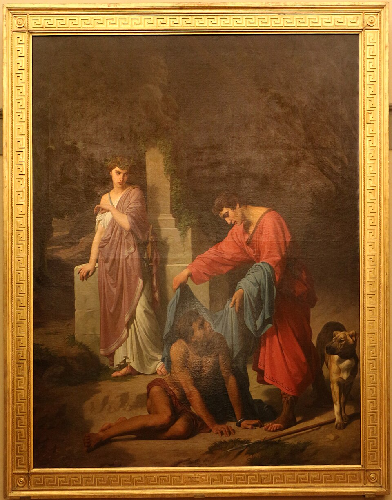
画像を拡大 ＋《エウドーロとチモドーチェ》
- 作者
- ルイージ・ムッシーニ
- 制作時期
- 1855年（画面表記）
- 所在地・所蔵
- 近代美術館、ピッティ宮殿、フィレンツェ
- 素材・形式
- 絵画
- 原題
- Eudoro e Cimodoce
出典・画像について
 画像を拡大 ＋
画像を拡大 ＋
《オフィーリア》
- 作者
- ジョン・エヴァレット・ミレイ
- 制作時期
- 1851～1852年
- 所在地・所蔵
- テート・ブリテン
- 素材・形式
- 油彩・カンヴァス
- 原題
- Ophelia
- 動画の年代
- 1852年
出典・画像について
美術史上の位置と評価
動画 28:20～ナザレ派が美術史で大きく扱われにくい理由として、革新的な造形を生んだというより、中世の復興を目指したことが挙げられます。19世紀の作品としては独特でも、理想とした時代の表現を越えたとは捉えにくい、という評価です。一方、ラファエル前派は古い美術を出発点に新しい解釈を加えた点で、より革新的と見られます。これは作品の価値を一律に決めるものではなく、両者の違いを考えるための評価の視点です。
それでもナザレ派は、ドイツ美術史を理解する上で重要な位置にあります。最初期の反アカデミー運動の一つとして、信仰、民族的な意識、教育への疑問を結び付け、その後の美術に影響を残しました。
要点まとめ
- ナザレ派は、アカデミーの技術偏重に反発し、中世や初期ルネサンスの宗教的精神を取り戻そうとした。
- ドイツの領邦分立や、内面に神を求める神秘主義は、ナザレ派を理解する背景となる。
- 宗教改革と戦争を経て、北部のプロテスタントと南部のカトリックでは美術の性格が異なった。
- 新古典主義の明快な美の規則は教育に適する一方、画一化を招き、個性を抑える問題もあった。
- ナポレオンの侵攻は、自分たちの歴史・文化を見直す意識を強めた。
- 1809年の聖ルカ兄弟団に続き、1810年に4人がローマへ移住し、修道院で共同生活を営んだ。
- 信仰と生活を結び付け、宗教画だけでなくドイツの歴史を描き、フレスコ画の復興にも取り組んだ。
- コルネリウスらが考えをドイツへ広め、オーヴァーベックはローマに残った。純粋主義やラファエル前派への影響もある。
- 中世復興としての革新性には評価の分かれる余地があるが、初期の反アカデミー運動として重要である。
確認問題
答えを考えてから開いてください。選択問題は選ぶとすぐ正誤と解説が出ます（選択肢の順番は開くたびに変わります）。各問題のリンクから該当の章や作品カードへ戻れます。
選択問題：0／4問回答・正解0
A. 一問一答答えを考えてから開く
問11809年にウィーンの学生たちが結成した集団は何か。
答えを見る
問2ナザレ派がローマで復興に取り組んだ、壁画の技法は何か。
答えを見る
問3プフォルの死の翌年、1813年にオーヴァーベックが行った宗教上の転換は何か。
答えを見る
B. 4択選ぶとすぐ正誤と解説
問4ナザレ派がアカデミーの教育に感じた問題はどれか。
→ 本文で確認（ウィーンで生まれた聖ルカ兄弟団）
問5ナザレ派の「中世」の理想に関する説明として正しいものはどれか。
→ 本文で確認（ウィーンで生まれた聖ルカ兄弟団）
問6ドイツ北部のフリードリヒらとナザレ派の比較として本文に合うものはどれか。
→ 本文で確認（ナポレオン戦争とドイツ・ロマン主義）
C. 図版問題画像を見て答える
問7この作品の作者と、二人の女性が表す地域を答えよ。
答えを見る
問8この作品の主題はどれか。
→ 作品カードで確認